🔧 ゼロから始める機械屋への道
新人教育Webアプリ｜現場編 Prototype Ver.0.24
現場編 START 🔧まずは、現場で
話が通じる新人へ。
安全 → 工具 → 測定 → 部品 → 加工。設計の前に、機械屋の土台を作る。
LEVEL 0 進捗0 / 26
📖 学ぶだけではCLEARにならない。現物でやる → 先輩が確認 → CLEAR。
📖 LEARN
まず知る
🎮 QUIZ
考える
🔧 DO
現物でやる
👨🔧 CHECK
先輩確認
🎯 現場編のゴール
危険な勝手行動をせず、先輩の基本指示を理解し、工具を選び、寸法を測り、主要部品と加工方法を大まかに説明できる。
現場編はLEVEL 0〜2で完結。終わったら次の独立教材「設計基礎編」へ。
⚠️ 最優先
機械が止まっていることと、安全であることは別。 スマホを見ながら機械の周囲を歩かない。
現場編
LEVEL MAP
「現場で話が通じる」から始めて、機械の部品と作り方まで身につける。
LEVEL 0
🔧 現場で話が通じる
安全・工具・締結・測定・現場語
LEVEL 1
⚙️ 機械についている物が分かる
軸・ベアリング・伝動・空圧・センサー・材料
LEVEL 0 CLEAR後に進む
LEVEL 2
🏭 部品がどう作られているか分かる
切断・穴あけ・TAP・旋盤・フライス・板金・溶接・表面処理
LEVEL 1 CLEAR後に進む
🎓 現場編 FINAL
LEVEL 0〜2をCLEARしたら、最後に現場編卒業実技へ。
安全に動ける。工具を選べる。部品が分かる。作り方が分かる。
ここまで来たら、次の独立教材「設計基礎編」へ。
LEVEL 0現場で話が通じる
安全・工具・締結・測定・現場語。まずは先輩の基本指示を理解して安全に動けるようになる。
🔒 TRAINING MODE｜LessonをCLEARすると次のLessonがOPEN。現物でやる → 先輩確認 → CLEARの順で進む。
🧪 レビュー用
最初から動作確認したい時だけ使用。
FIELD WORDS🔍 現場語辞典
分からん言葉が飛んできたら、ここで検索。関連Lessonから実物の使い方まで戻れる。
M8
ねじの呼び径が約8mmのメートルねじ。工具サイズ8mmという意味ではない。
13
工具の文脈なら二面幅13mm。キリの文脈ならφ13mm。数字だけで決めつけない。
平W
平ワッシャー／平座金。座面を広げ、部品表面を守る役割などがある。
SW
スプリングワッシャー／ばね座金。うちでは通常締結で基本使用。
キャップ
六角穴付きボルトを指す現場呼称。六角レンチで回す。
トラス
頭が低く広いねじ。うちではカバー類でよく使用。
TAP
穴の内側にめねじを加工すること／その工具・ねじ穴を指す現場語。
キリ
現場でドリル刃を指す呼び方。例：「6.8のキリ」＝φ6.8mmのドリル刃。
メジャー
うちではコンベックス（巻き取り式の鋼製巻尺）をこう呼ぶ。
LEVEL 0 TOOL INDEX⚙️ 工具・部品図鑑
名前を忘れた時に、見た目と用途から関連Lessonへ戻れる簡易図鑑。
気になる工具・部品をタップすると、関連Lessonへ戻って使い方を確認できる。
LESSON 0-01
⚠️ 勝手に触らない・乗らない・潜らない
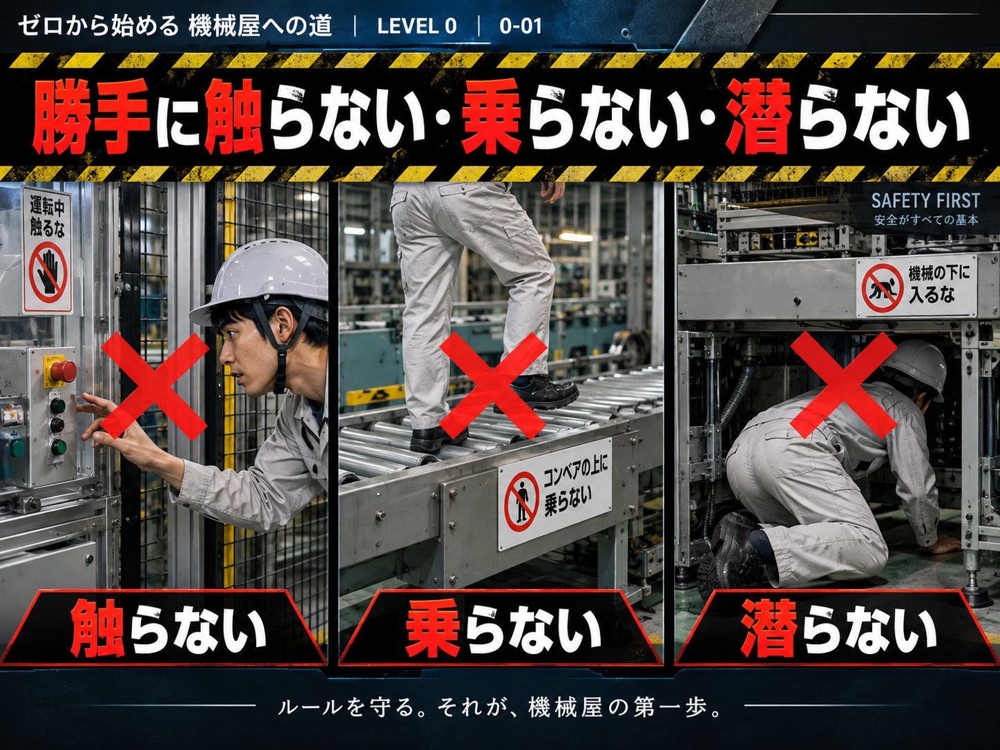
実物認識ビジュアル｜0-01
最初にこれだけ
機械が止まっていることと、安全であることは別。
電気・エア・重力・残圧など、見えないエネルギーが残っていることがある。会社で定めた停止・隔離・確認手順と責任者／先輩の指示を守る。
👀 新人あるある危険行動
① ローラーコンベアに乗る・歩く
② 光電センサーを手で遮る
③ 電源・エアが生きたまま装置内へ手を入れる
④ 落とした工具を取りに機械の下へ潜る
⑤ センサー・配線・機器を踏む
基本ルール
勝手に触らない
勝手に入らない
潜らない・乗らない
止まって見えても
安全と決めつけない
分からなければ
先輩に確認
🎮 ケース問題
停止中のコンベアに詰まりを発見。手が届きそう。
工具を機械の下へ落とした。
🔧 現場ミッション
👷 先輩チェック
現物・口頭確認ができたら、指導者と一緒にCLEAR。
LESSON 0-02
⚠️ 止まっている ≠ 安全
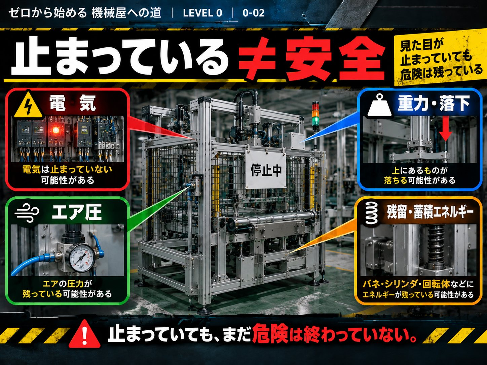
実物認識ビジュアル｜0-02
👀 機械が止まっていても安心しない
止まっていることと、安全であることは別。
見た目に動いていなくても、機械には危険なエネルギーが残っていることがある。
📖 残っているかもしれないもの
⚡ 電気
電源・蓄電・自動復帰
💨 エア
残圧でシリンダーが動く
⬇️ 重力
上がった物が落ちる
🌀 蓄えた力
バネ・慣性・張力など
😱 新人あるある
「止まってるから大丈夫やろ」で手を入れる。
「すぐ取れるから」で機械の下へ潜る。
その判断を新人が勝手にしない。
🏭 うちでの基本
停止・遮断・残圧処理・安全確認は、会社で決めた手順と責任者・先輩の指示に従う。
このWeb教材を見ただけで「自分で安全確認できる」とはしない。
🧠 考えてみよう
シリンダーが止まっている。だから手を入れても大丈夫？
答え：勝手に判断しない。
🎮 クイズ
機械が動いていなければ安全？
落とした工具が機械の下にある。どうする？
🔧 現場ミッション
👷 先輩チェック
「止まっている＝安全」ではない理由を自分の言葉で説明できたらCLEAR。
LESSON 0-03
🔩 ボルト・ナット・ワッシャー
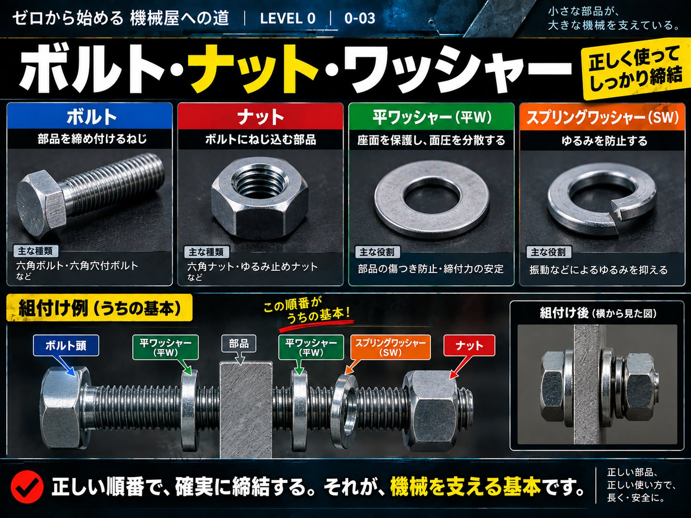
実物認識ビジュアル｜0-03
👀 4つを見分ける
ボルト
外側にねじ山
ナット
内側にねじ
平W
平ワッシャー
SW
スプリングワッシャー
🏭 うちの標準
通常の締結ではSWを基本的に使用。ただしカバー類をトラスで固定する場合はワッシャーを使わないことが多い。鉄系ボルトはユニクロが多く、ステンレスはSUS304が基本。
TAP締めとナット締め
TAP：ボルト頭 → SW → 平W → 部材 → TAP穴
ナット：ボルト頭 → 平W → 部材 → 平W → SW → ナット
TAP・キリ穴そのものは後のLessonで詳しく扱う。
🎮 クイズ
SWとは？
キリ穴＋ナット締めではSWは基本どちら側？
🔧 現場ミッション
👷 先輩チェック
現物・口頭確認ができたら、指導者と一緒にCLEAR。
LESSON 0-04
🔩 六角・キャップ・トラス
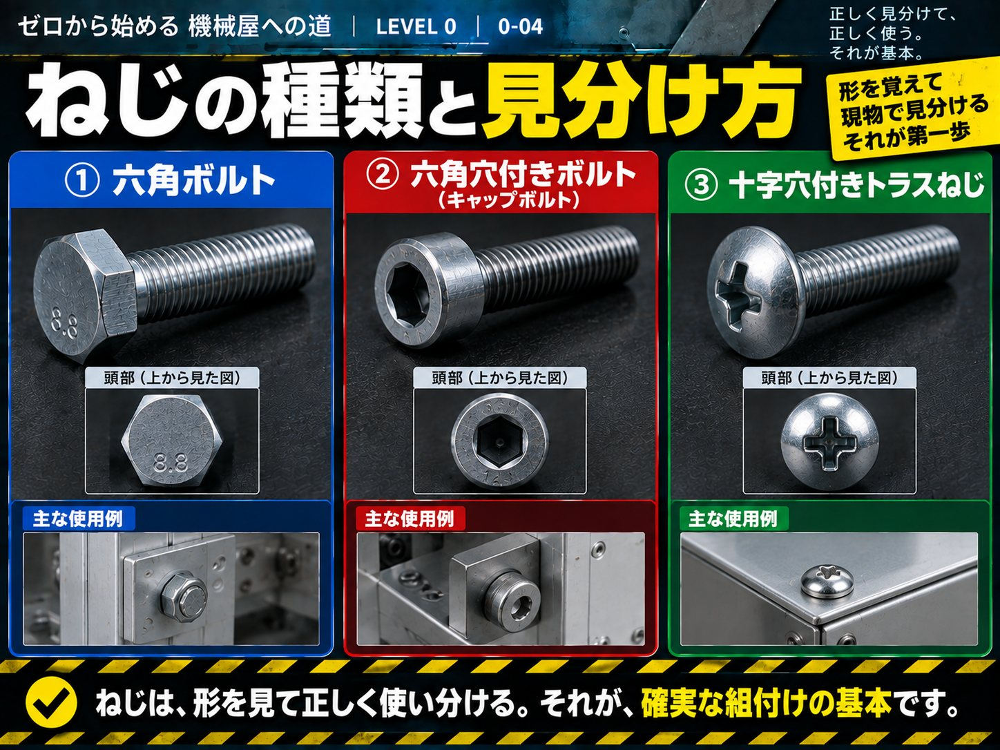
実物認識ビジュアル｜0-04
👀 「全部ボルト」から卒業
六角ボルト
外六角をスパナ等で回す
キャップボルト
六角穴付き。六角レンチ等
トラス
頭が低く広い。カバー等
🏭 使い分けの感覚
六角とキャップは用途を丸暗記しない。工具が入る？ 頭が干渉せん？ 組める？ 後で外せる？を考える。設計側の深掘りは「設計基礎編」以降で扱う。
新人あるある
「CAD上では六角でも入ってます！」→ 入ることと工具で締められることは別。
🎮 クイズ
現場で「キャップ」と呼ぶことが多いのは？
うちでカバー類によく使うのは？
🔧 現場ミッション
👷 先輩チェック
現物・口頭確認ができたら、指導者と一緒にCLEAR。
LESSON 0-05
📏 M5〜M20って何？
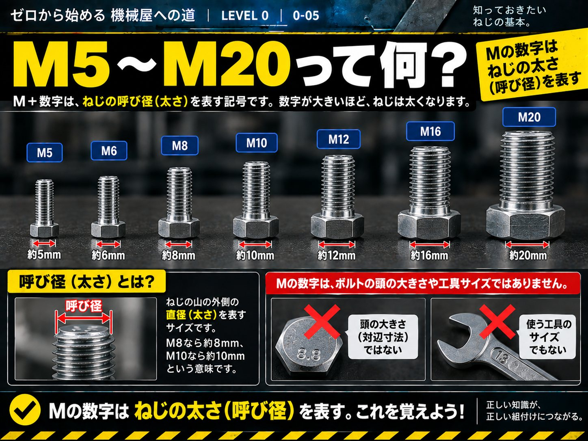
実物認識ビジュアル｜0-05
👀 Mの後ろの数字
M8 ＝ ねじの呼び径が約 8mm
厳密には「呼び径」。実測が必ずぴったり8.000mmという意味ではない。
🏭 うちでよく使う範囲
見た目だけで決めず、図面・表示・測定で確認する。
🎮 クイズ
M8の8は？
M16とM8、太いのは？
🔧 現場ミッション
👷 先輩チェック
現物・口頭確認ができたら、指導者と一緒にCLEAR。
LESSON 0-06
📐 M8×30って何？
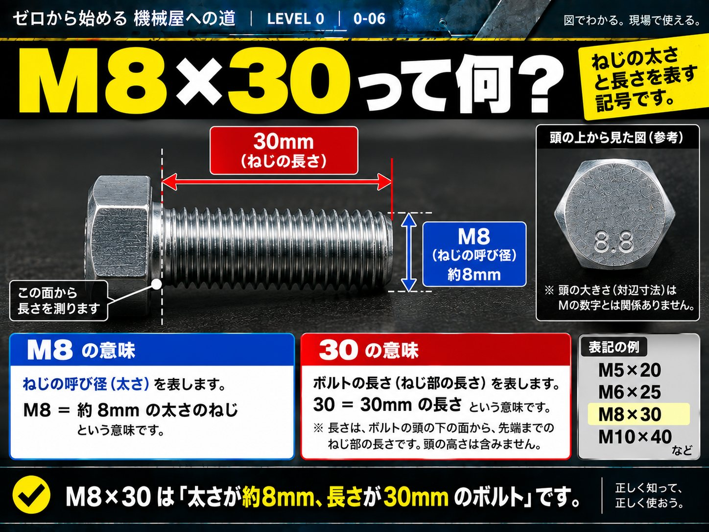
実物認識ビジュアル｜0-06
👀 2つの数字
M8 × 30
呼び径8mm × 長さ30mm
一般的な六角ボルト等では座面から先端まで。皿ねじ等は例外がある。
新人あるある
短すぎ：ねじの掛かり不足。
長すぎ：TAP穴底への突き当たり、不要な突出、干渉。
短すぎ ❌ 適切 ⭕ 長すぎ ❌
🏭 うちで覚えてほしいこと
径だけ見て選ばない。長さも確認。具体的なねじ込み長さ等は条件で変わるため、LEVEL 0では勝手な数字を丸暗記しない。
🎮 クイズ
M8×30の30は？
TAP穴で不自然に固くなったら？
🔧 現場ミッション
👷 先輩チェック
現物・口頭確認ができたら、指導者と一緒にCLEAR。
LESSON 0-07
🔧 M8なのに、なんで13なん？
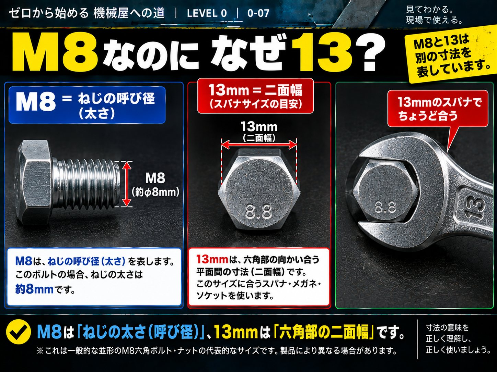
実物認識ビジュアル｜0-07
👀 ついに元凶
M8 ＝ ねじの呼び径
13 ＝ 一般的なM8六角頭・ナットに掛ける工具の二面幅
🤣 すべての元凶
先輩「13持ってきて」
新人「……M13？ 😨」
工具の話なら「13」は13mmのスパナ・レンチ類を指す文脈が多い。
🏭 まず覚える対応
| ねじ | よく使う二面幅 |
|---|
| M5 | 8 |
| M6 | 10 |
| M8 | 13 |
| M10 | 17 |
| M12 | 19 |
種類・系列で例外あり。現物・図面・仕様を優先。
数字は文脈で聞く
| 言い方 | 意味 |
|---|
| 13のスパナ | 13mmスパナ |
| 13のキリ | φ13mmドリル |
🎮 元凶撃破クイズ
一般的なM8六角ボルトでよく使う工具サイズは？
「13のキリ」は？
🔧 因縁の現場ミッション
👷 先輩チェック
現物・口頭確認ができたら、指導者と一緒にCLEAR。
LESSON 0-08
🔧 ラチェットとソケット
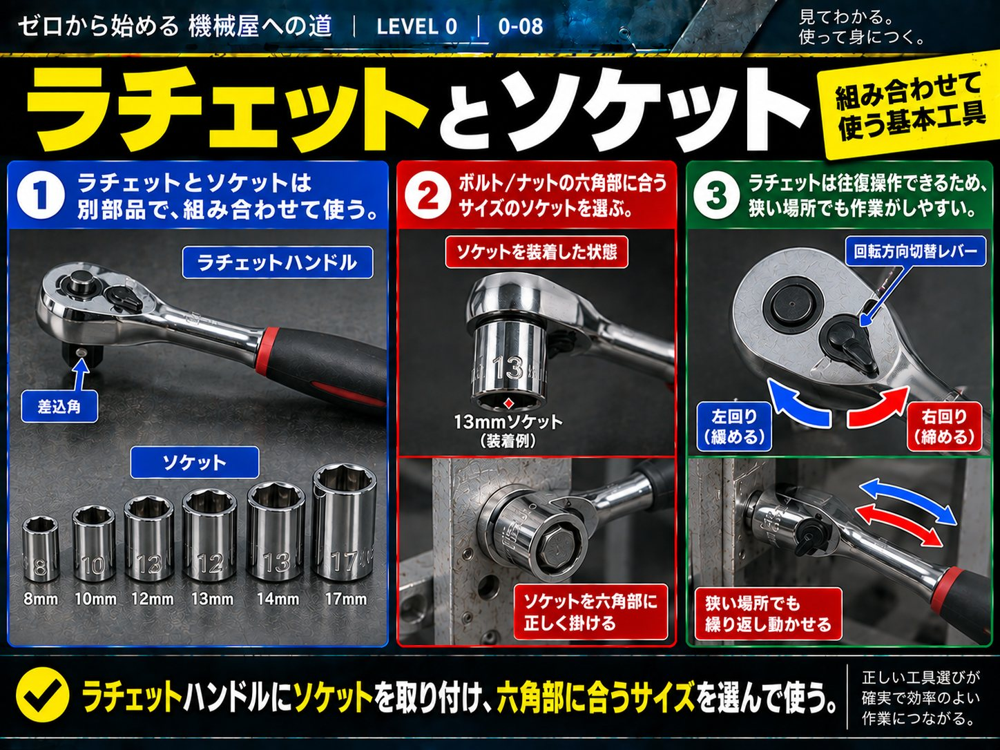
実物認識ビジュアル｜0-08
👀 まずは2つに分けて考える
ラチェットハンドル
回すための本体。往復させながら締めたり緩めたりできる。
ソケット
ボルトやナットに直接かぶせる交換式の先端工具。
「ラチェット＝13」ではない。13なのはソケット側のサイズ。
📖 0-07の「13」がここでも出てくる
一般的なM8六角ボルト
→ 13mmソケット
13mmスパナだけでなく、13mmソケットも同じ二面幅に使える。
😱 新人あるある
先輩「13のソケット取って」
新人「13のスパナ持ってきました！」
数字が同じでも、どの工具を指定されているかまで聞き取る。
🔁 回す方向を切り替える
多くのラチェットには切替レバーがある。締め方向・緩め方向を切り替えて使う。
回したい方向に力が掛かるか、作業前に確認。
レバーの向きと回転方向は製品によって見え方が違うため、矢印や実際の空転方向を確認する。
⚠️ 正しく使う
ソケットはボルト・ナットへ奥までしっかり掛ける。斜め掛けしたまま力を掛けない。
ラチェットをハンマー代わりに叩かない。パイプを差して無理に延長するなど、勝手な使い方もしない。
🏭 うちでまず覚えること
LEVEL 0では、差込角の種類を全部暗記するより先に、「指定サイズのソケットを選ぶ」「ラチェットへ確実に装着する」「正しく掛ける」を優先する。
差込角や工具メーカーは会社ごとに構成が違うため、実際の工具箱と会社標準で確認する。
🎮 クイズ
一般的なM8六角ボルトに使うことが多いソケットは？
「13のソケット」と言われたら？
ソケットが少し斜めでも回せそう。どうする？
🔧 現場ミッション
👷 先輩チェック
サイズを迷わず選び、ソケットを奥まで掛け、回転方向を確認して扱えたらCLEAR。
LESSON 0-09
🔄 ねじはどっちに回す？
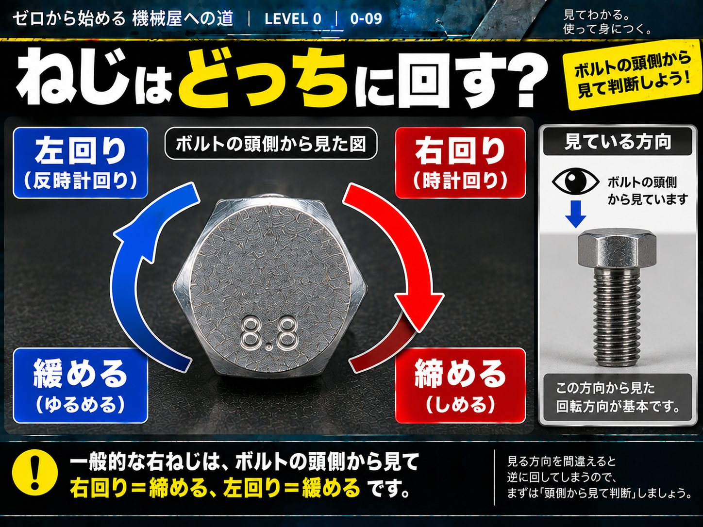
実物認識ビジュアル｜0-09
👀 まず基本
一般的な右ねじは
ねじの頭側から見て
時計回り＝締まる
反時計回り＝緩む
よく言う「右締め・左緩め」。ただし、見る向きが変わると手の感覚だけでは混乱しやすい。
😱 新人あるある
床下から上向きに作業した瞬間、「右ってどっち！？」となる。
正面・裏側・下向き・上向きで体の向きが変わると、手の動きだけで覚えている人はパニックになりやすい。
🧠 コツは「自分の右」じゃなく回転方向
「右手側へ動かす」と覚えず、ボルトの頭を見て時計回りか反時計回りかで考える。
裏側から見れば、同じ実際の回転でも見え方は逆になる。どちら側から見ているかを意識する。
🔧 ラチェットではさらに確認
0-08で覚えた切替レバーも、「レバーの向き」だけ丸暗記しない。
ソケットをボルトに掛ける前に、空転させて「力が掛かる方向」を確認すると迷いにくい。
🏭 LEVEL 0ではここまで
まずは一般的な右ねじで、向きが変わっても締め・緩めを判断できることを優先する。
機械には左ねじなどの例外もある。見慣れない箇所や判断できない場合は、勝手に力を掛けず先輩・図面・仕様を確認する。
🎮 クイズ
一般的な右ねじを、ねじ頭側から見て締める方向は？
上下逆の作業で方向が分からなくなった。どうする？
固くて回らない。方向にも自信がない。
🔧 現場ミッション
👷 先輩チェック
作業方向を変えても「時計回り／反時計回り」で締め・緩めを判断し、分からない時に無理に回さなければCLEAR。
LESSON 0-10
🔧 六角レンチ
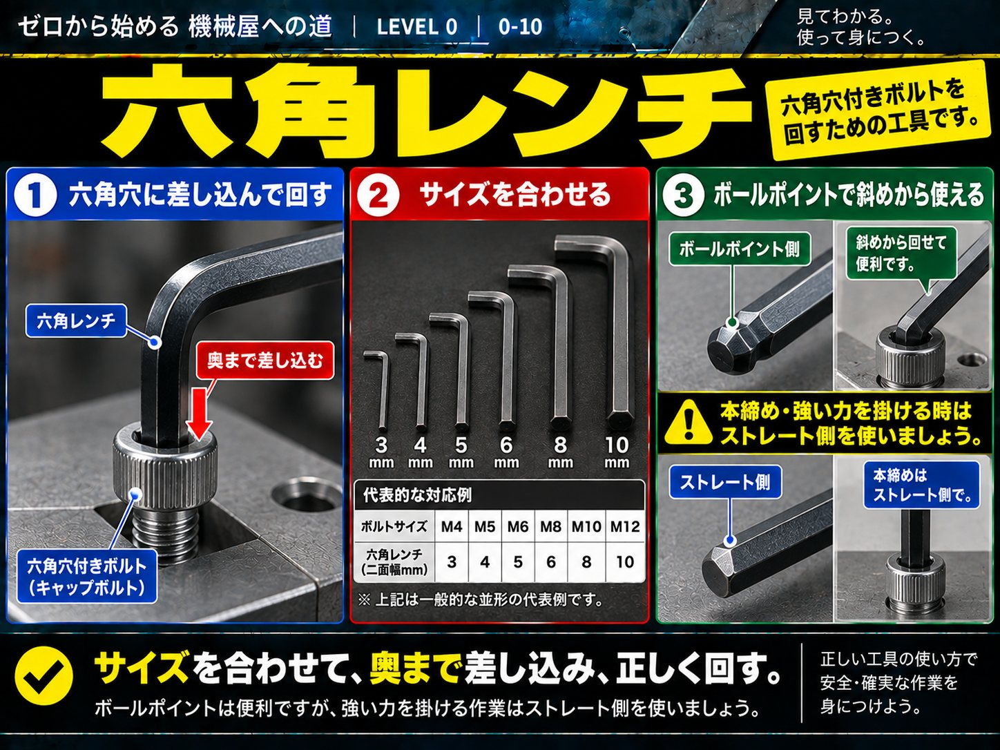
実物認識ビジュアル｜0-10
👀 何に使う？
六角レンチは、六角穴付きボルト（キャップ）を回す工具。
LEVEL 0-04で覚えた「キャップ」とセットで覚える。
📖 サイズは「ボルトのM」と同じじゃない
六角レンチのサイズは、ボルト頭の六角穴の対辺寸法。
M8キャップだから
8mm六角とは限らない。
ボルト径と工具サイズは別物。現物・規格・図面を確認する。
🏭 キャップボルトと六角レンチ早見表
| キャップボルト | よく使う六角レンチ |
|---|
| M4 | 3mm |
| M5 | 4mm |
| M6 | 5mm |
| M8 | 6mm |
| M10 | 8mm |
| M12 | 10mm |
六角穴付きボルト（キャップボルト）の代表的な組み合わせ。種類・規格で例外があるため、最終的には現物・図面・仕様を確認する。
👀 通常側とボールポイント側
覚え方：ボールポイントは「角度が欲しい時の補助」。最後にしっかり締める／固いボルトを緩め始める時は、通常側をまっすぐ奥まで掛ける。
😱 新人あるある
「M8やから8の六角やろ！」で工具箱を探す。
さらに、少し小さい六角を差して「入ったからこれやろ」で回して、六角穴をなめる。
⚠️ 正しく使う
六角レンチは、奥までしっかり差し込んでから回す。
⭕ 正しい
サイズを合わせる
奥まで入れる
まっすぐ力を掛ける
❌ ダメ
サイズ違い
浅掛け
斜め掛け
無理締め
🔵 ボールポイントは便利。でも…
先端が丸いボールポイントは、少し斜めから回せるので便利。
でも、本締め・強い緩め作業には向かない。
強いトルクを掛けると、先端が傷んだり、最悪の場合は先端がちぎれることがある。
斜め掛けで接触面が少なくなるため、強く力を掛けるとボルト穴や工具を傷めやすい。
😱 うちで実際にあるやつ
ボールポイント側で固いボルトを無理に回す → 先端ポキッ。
ちぎれた六角レンチが転がってるのは、まさにこのパターン。折れた先端が六角穴に残ると、そこからさらに面倒になる。
ボールポイントは「角度が欲しい時の補助」。
強トルク用ではない。
🏭 うちでまず覚えること
LEVEL 0では、キャップボルトを見たら六角レンチを連想できること、サイズ違いを無理に使わないこと、奥まで差して使うことを優先する。
T型・L型など形状が違っても、まずは「正しいサイズ」「奥まで掛ける」「強トルク時は通常側」を共通ルールとして覚える。
🎮 クイズ
六角レンチを主に使うのは？
M8キャップなら8mm六角レンチ？
六角レンチが浅くしか入っていない。どうする？
ボールポイントで固いボルトを本締めしていい？
🔧 現場ミッション
👷 先輩チェック
キャップボルトに対して正しい六角レンチを選び、奥まで差して安全に扱えたらCLEAR。
LESSON 0-11
🔧 モンキーレンチ
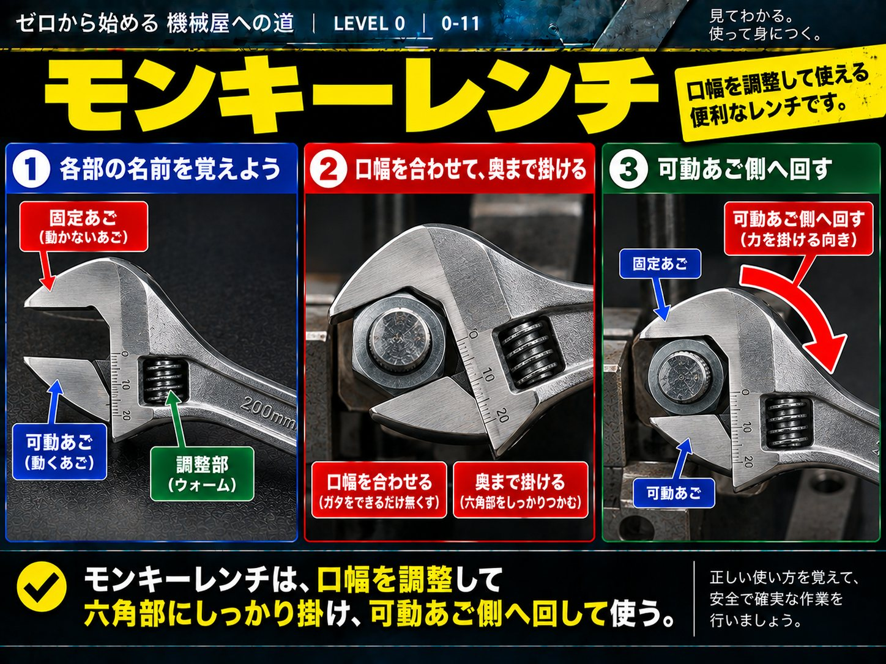
実物認識ビジュアル｜0-11
👀 何が便利？
口幅を変えられるから、いろんな二面幅に合わせられる。
ただし、サイズが合うスパナ・メガネ・ソケットが使えるなら、そちらを優先した方が確実な場面も多い。
📖 まず名前を知る
固定あご
本体と一体の動かない側
可動あご
調整ねじで動く側
調整ねじ
口幅を合わせる部分
😱 新人あるある① 口幅がガバガバ
ナットに掛けてから「まあ回るやろ」で使う。
ガタがあるまま力を掛けると、角をなめやすい。
口幅は対象物へしっかり合わせ、ガタをできるだけ少なくする。
😱 新人あるある② 向きを気にしない
モンキーは、どっち向きでも同じではない。
力を掛けるときは、なるべく固定あご側で主な力を受ける向きにして、可動あごへ無理な力を掛けない。
向きは実物を使って先輩と確認する。文章だけで「右向き・左向き」と丸暗記しない。
😱 うちで実際にあるやつ
向きもガタも気にせず酷使して、調整ねじがガッチガチ。
口幅調整が渋くなっている工具を見たら、そのまま力任せで使わず状態を確認する。
⚠️ やったらアカン
❌ ガタあり
口幅を合わせず使う
❌ 斜め掛け
面で当てず角だけで回す
❌ ハンマー代わり
叩く工具ではない
❌ 無理な延長
パイプを勝手に差して力を増やさない
🏭 うちでまず覚えること
口幅を合わせる → 向きを確認する → 面でしっかり掛ける。
そして、13のスパナ・13のソケットなど、専用サイズの工具があるなら「モンキーで何でも済ませる」癖をつけない。
🎮 クイズ
モンキーを使う前にまずすることは？
力を掛ける向きは？
調整ねじが異常に固い。
13mmスパナが使える場所でもモンキーでいい？
🔧 現場ミッション
👷 先輩チェック
口幅・掛け方・向きを確認し、モンキーを「何でも回す工具」として使わなければCLEAR。
LESSON 0-12
🪛 ドライバー
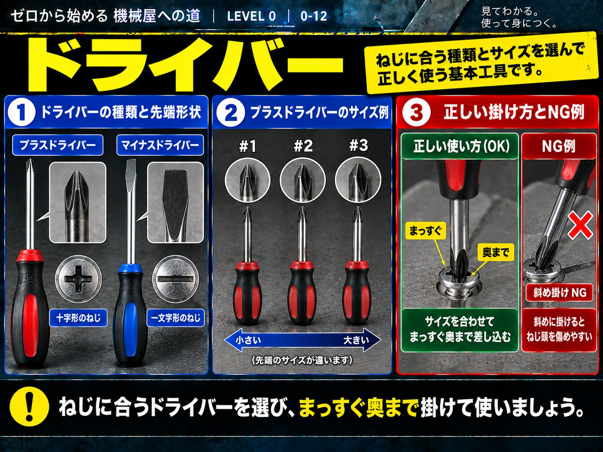
実物認識ビジュアル｜0-12
👀 「＋なら全部一緒」ではない
ドライバーには、形とサイズ（番手）がある。
見た目が同じ＋でも、先端サイズが合っていないと、ねじ頭を傷めやすい。
📖 まず覚える
＋ドライバー
十字穴付きねじ用
－ドライバー
すり割り付きねじ用
番手
先端サイズの違い
🏭 ＋ドライバーの代表的な番手
| 番手 | ざっくりした使い分け |
|---|
| #1 | 小さめのねじ |
| #2 | 一般的によく使うサイズ |
| #3 | 大きめのねじ |
ねじ頭の形状・規格によって適合は変わる。LEVEL 0では「番手がある」「合う物を選ぶ」を優先する。
😱 新人あるある
「＋やからこれでええやろ」で番手違いを使う。
先端が浅くしか掛からない → 強く回す → カムアウトして十字穴をナメる。
合わない時に力で解決しない。
✅ 合っているか確認する
先端をねじ頭へ差した時に、しっかり奥まで入り、ガタが少なく、まっすぐ力を掛けられることを確認する。
⭕ 合っている
深く入る
ガタが少ない
まっすぐ押せる
❌ 合っていない
浅い
グラグラ
先端だけ当たる
💪 回すだけじゃなく「押す」
＋ねじは回転だけでなく、ねじ頭へまっすぐ押し付けながら回すのが基本。
斜めから回すと、ねじ頭から先端が逃げてナメやすい。
⚠️ 固いねじほど慎重に
固いからといって、番手違いのまま力を増やすとねじ頭を壊しやすい。
「入りが浅い」「滑る」「怪しい」と感じたら、一度止めて番手・姿勢・工具状態を確認する。
🏭 うちでまず覚えること
「＋ドライバー取って」だけで終わらず、ねじを見て合う番手を選ぶ癖をつける。
LEVEL 0ではまず #1・#2・#3 を見比べて、見た目と先端サイズの違いを現物で覚える。
🎮 クイズ
＋ドライバーなら、どの＋ねじにも同じ物を使える？
先端が浅くしか入らず、少しグラグラする。
＋ねじを回す時は？
固いねじが回らない。
🔧 現場ミッション
👷 先輩チェック
ねじを見て番手を選び、奥まで掛け、まっすぐ押しながら回せたらCLEAR。
LESSON 0-13
🗜️ ペンチ・ニッパー・プライヤー・ラジペン
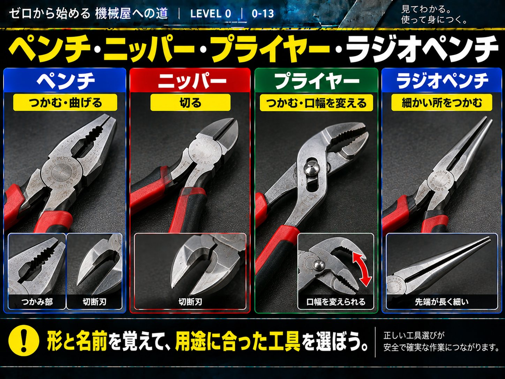
実物認識ビジュアル｜0-13
👀 見た目は似てても仕事が違う
ペンチ
つかむ・曲げる・切るを広くこなす
ニッパー
主に線材・配線などを切る
プライヤー
物をつかむ・保持する
ラジオペンチ
細い先端で狭い場所をつかむ・曲げる
😱 新人あるある
工具箱にある「握るやつ」を、だいたい同じ扱いにする。
つかみたいのにニッパー、切りたいのにラジペンみたいな選び方をしがち。
形が似ていても、刃・先端・用途が違う。
✂️ ニッパーは「何でも切る工具」ではない
切る物の材質や太さによって、刃を傷めることがある。
硬い物・太い物・用途不明の物を、勝手に力任せで切らない。
😱 うちでよくあるやつ：エアチューブ
ニッパーでエアチューブを切らせると、だいたい斜めに切る。
斜め切り・つぶれた切り口
→ 継手への差し込み不良やエア漏れの原因になりやすい。
エアチューブは、できるだけ直角で、つぶさず、きれいに切る。
専用のチューブカッターがあるなら、そちらを使う方が確実。
📖 ラジペンは細かい作業向き
先端が細いので、狭い所の保持や小物の曲げに便利。
ただし、太い物を無理につかんだり、強トルクを掛ける工具ではない。
🏭 うちでまず覚えること
「何をしたいか」から工具を選ぶ。
つかむ？ 切る？ 狭い所？ チューブ？ 目的を考えてから工具箱へ行く。
エアチューブを切る時は、会社で指定された標準工具・方法を確認してから作業する。
🎮 クイズ
配線を切る用途で一番連想しやすいのは？
狭い場所で小さな部品をつかみたい。
エアチューブをニッパーで斜めに切った。
硬そうな物だけど、ニッパーなら切れそう。
🔧 現場ミッション
👷 先輩チェック
4種類を見分け、目的に合った工具を選び、エアチューブの切り口も確認できたらCLEAR。
LESSON 0-14
🔨 ハンマー・プラハン
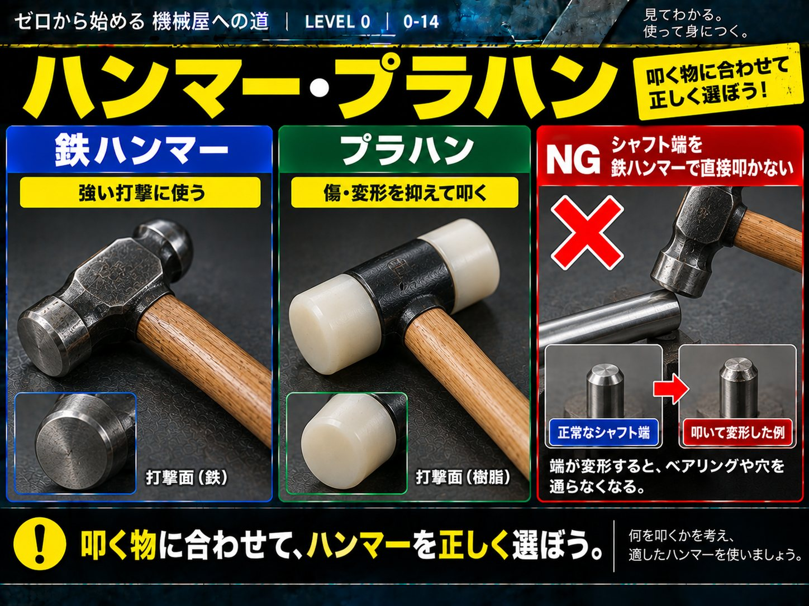
実物認識ビジュアル｜0-14
👀 「叩く工具」も使い分ける
鉄ハンマー
強い打撃が必要な作業向き
プラハン
傷や変形を避けたい部品の調整向き
同じ「叩く」でも、対象物と目的で工具を選ぶ。
😱 うちで実際にあるやつ
シャフトが抜けへん → 鉄ハンマーで端面を直接ガンガン。
その結果、端面がつぶれたり盛り上がったりして、軸受けやベアリングの内径を通らなくなることがある。
抜きたいのに、さらに抜けなくする。
📖 シャフト端面は意外と大事
シャフトの端面を直接強く叩くと、先端がわずかに変形しても問題になる。
特に、ベアリング・ブッシュ・穴を通す部分では、数十分の数mmレベルの変形でも引っ掛かることがある。
✅ どう考える？
いきなり「強く叩く」ではなく、まずなぜ動かないかを確認する。
確認1
止め輪・セットスクリュー・キーなどが残ってない？
確認2
固着・錆・圧入・荷重が掛かってない？
確認3
どこを叩いてよい構造？
確認4
当て物・プラハン・抜き工具が必要？
⚠️ 叩く前に考える
軸・ベアリング・精密部品を、理由もなく鉄ハンマーで直接叩かない。
また、ベアリングを打ち込む作業では、どの輪に力を掛けるかを間違えると内部を傷めることがある。
LEVEL 1ではベアリングの役割を学び、圧入・抜き方などの詳しい扱いは実技・後続教材で扱う。
🏭 うちでまず覚えること
「叩いたら動くやろ」から入らない。
傷を付けたくない調整ではプラハンを検討し、シャフト端面や精密部品へ強い打撃が必要そうなら、先に先輩へ確認する。
🎮 クイズ
シャフトが抜けない。最初にすることは？
シャフト端面を鉄ハンマーで直接叩き続けると？
部品を傷付けず位置を微調整したい。
叩き方に自信がない。
🔧 現場ミッション
👷 先輩チェック
目的に応じて鉄ハンマー・プラハンを選び、シャフト端面をむやみに直接叩かない判断ができたらCLEAR。
LESSON 0-15
📏 スケール・メジャー
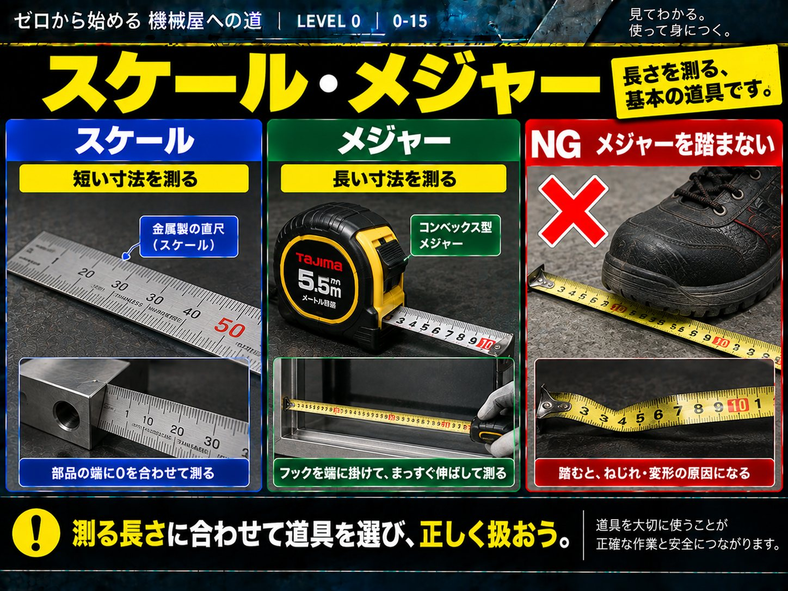
実物認識ビジュアル｜0-15
👀 まず呼び方
スケール
金属製の直尺。短い寸法や基準合わせに使う。
コンベックス
巻き取り式の鋼製巻尺。
現場ではコンベックスを「メジャー」と呼ぶことも多い。
🏭 うちではこう呼ぶ
コンベックス ＝ だいたい「メジャー」
先輩に「メジャー取って」と言われたら、巻き取り式の鋼製メジャーを指すことが多い。
📖 使い分けの入口
スケール：短い寸法・平らな場所・基準を当てて測るのが得意。
メジャー：長い寸法・離れた場所・一人で引っ掛けて測る時に便利。
LEVEL 0では「どっちを使うか」を判断できればOK。精密測定はノギスで扱う。
😱 うちで実際にあるやつ
スチール製メジャーを床に伸ばしたまま踏む。
テープがねじれたり折れ癖が付いたりして、先端フックを引っ掛けてもまっすぐ伸びへん。
測る工具を踏んで、測りにくい工具にする。
⚠️ メジャーの扱い
❌ 踏まない
ねじれ・折れ癖・変形の原因
❌ 勢いよく戻さない
先端フックや指を傷める
⭕ まっすぐ伸ばす
ねじれたまま測らない
⭕ 状態を見る
曲がり・フック・目盛りを確認
📌 先端フックも測定の一部
メジャーの先端フックは、引っ掛けたり押し当てたりして測るための重要部分。
変形・ガタ・ねじれがひどいと、同じ物を測っても値が安定しにくい。
「ちょっと曲がってるけど読めるからOK」ではなく、工具の状態も測定精度の一部と考える。
😱 新人あるある
メジャーを斜めに引いて、そのまま数字だけ読む。
長さを測る時は、測りたい方向に対してまっすぐ当てる。
🎮 クイズ
うちで「メジャー」と呼ぶことが多いのは？
床に伸ばしたメジャーを踏むと？
メジャーがねじれた状態で長さを測る。
先端フックが大きく変形している。
🔧 現場ミッション
👷 先輩チェック
用途に合う測定具を選び、メジャーを踏まず・ねじらず・まっすぐ使えたらCLEAR。
LESSON 0-16
📐 ノギス
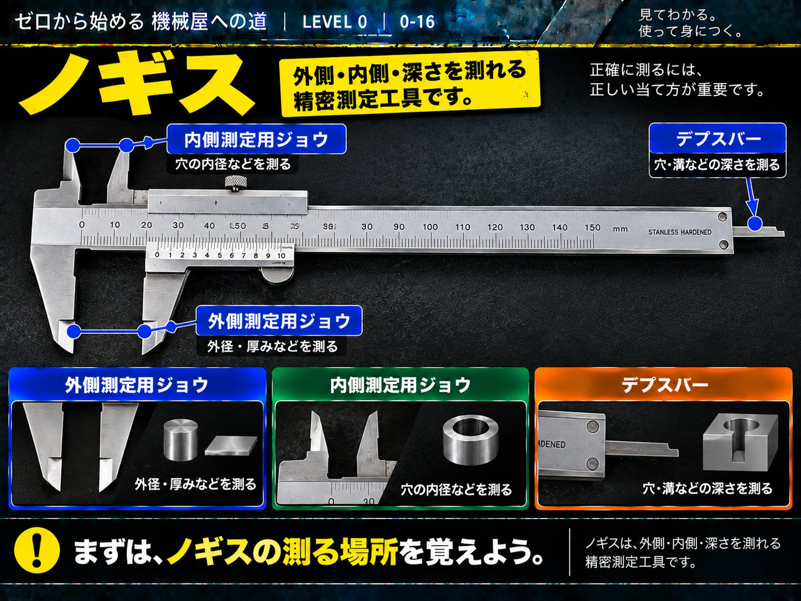
実物認識ビジュアル｜0-16
👀 ノギスで何が測れる？
外側寸法
板厚・軸径・外径など
内側寸法
穴径・溝幅など
深さ
穴・段差の深さ
「長さを測る道具」ではなく、外側・内側・深さを使い分ける測定工具。
📖 3つの測り方
外側を測る
大きいジョウで対象物を軽くはさむ
内側を測る
小さいジョウを穴の内側へ広げる
深さを測る
デプスバーを底まで当てる
斜めに当てると正しい値が出にくい。対象面に対してまっすぐ当てる。
😱 新人あるある
外径を測る時、強くギュッと挟んで「止まった数字が正解」と思う。
薄い物・柔らかい物は、強く挟むだけでも測定値が変わることがある。
ノギスはクランプ工具ではない。
🔢 小数点以下が最初の壁
ノギスは、1mm単位ではなく0.1mmや0.05mm、デジタルなら0.01mm表示まで読むことがある。
例：12.35 mm
＝ 12mm ＋ 0.35mm
「12.35」を「12ミリ35」ではなく、12.35mmとして読む。
📏 アナログとデジタル
アナログ
本尺＋副尺（バーニヤ）を読む
デジタル
表示をそのまま読む。ゼロ点確認が重要
LEVEL 0では、まず測り方と小数点の意味を優先する。
アナログの副尺の細かい読み方は、実物を見ながら練習する。デジタルでもゼロ点ずれ・電池・ゴミ噛みには注意。
🏭 うちの現場感
デジタルノギスを使う場合でも、測る場所と当て方が間違ってたら表示が正しくても意味がない。
表示が細かい＝測定そのものが正確、ではない。
😱 もう一つのあるある
穴径を外側ジョウで測ろうとする、深さを目測する、斜めに当てたまま数字だけ読む。
どの部分を使って何を測るかを先に考える。
✅ 測る前のチェック
ゼロ確認
閉じて0付近か
測定面
ゴミ・バリ・油が邪魔してないか
姿勢
斜めになっていないか
力加減
強く締め付けてないか
🎮 クイズ
軸の外径を測る時に使うのは？
穴の内径を測る時に使うのは？
表示が12.35mm。小数点以下は？
ノギスは強く挟んだ方が正確？
🔧 現場ミッション
👷 先輩チェック
外側・内側・深さを正しく使い分け、斜め・強締めを避け、小数点以下まで読めたらCLEAR。
LESSON 0-17
🕳️ ドリルと「キリ」
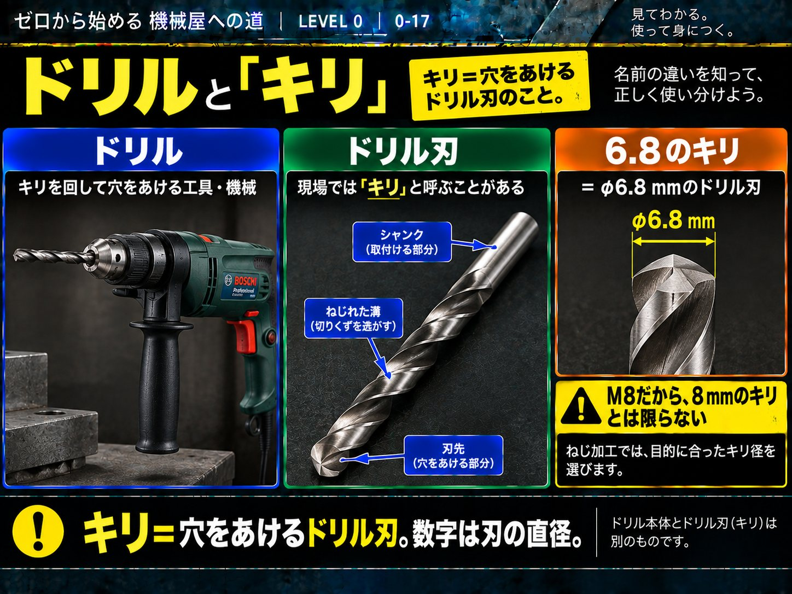
実物認識ビジュアル｜0-17
👀 「ドリル」と「キリ」は同じ？
ドリル本体
刃物を回す機械・工具
ドリル刃
穴をあける刃物
現場では、ドリル刃のことを「キリ」と呼ぶことが多い。
🏭 うちでよく出る言い方
「6.8のキリ取って」
＝ φ6.8mmのドリル刃
「13のキリ」なら、工具の13mmスパナではなく、φ13mmのドリル刃という意味になる。
数字だけで判断せず、会話の文脈を見る。
📖 キリの数字は何？
キリの数字は基本的に、あける穴の直径を表す。
6.8のキリ → 約φ6.8の穴をあける刃
実際の穴径は加工条件や刃物状態などでも変わる。LEVEL 0ではまず「数字＝刃径」と理解する。
😱 新人あるある
「6.8って長さ？」とか、「M8用やから8のキリ？」と考える。
穴あけのキリ径と、ねじの呼び径は別物。次のTAP Lessonでこの関係をつなげる。
🧠 なんで6.8みたいな中途半端な数字がある？
穴は、あとでそのまま使う場合もあれば、ねじを作るための下穴として使う場合もある。
だから現場では、整数だけでなく6.8mmなどのサイズも普通に出てくる。
穴あけ → 次工程へつながる
⚠️ 回転工具は勝手に使わない
ドリルは回転体。巻き込み・刃物破損・切粉・ワーク飛散などの危険がある。
LEVEL 0では名称・サイズ・用途の理解を優先。 実際の穴あけは、会社の教育・保護具・固定方法・先輩指示に従う。
✅ キリを選ぶ時に見るところ
サイズ
必要なφか
状態
欠け・曲がり・摩耗はないか
用途
材料や作業に合うか
「穴があけば何でも同じ」ではない。詳しい材質別の刃物選定は後で扱う。
🎮 クイズ
「6.8のキリ」と言われたら？
「13のキリ」は？
M8のねじを使うなら、必ず8mmのキリ？
ドリルを使ったことがないけど穴をあけたい。
🔧 現場ミッション
👷 先輩チェック
「キリ＝ドリル刃」を理解し、指定されたφサイズを文脈から正しく選べたらCLEAR。
LESSON 0-18
🌀 TAPって何？
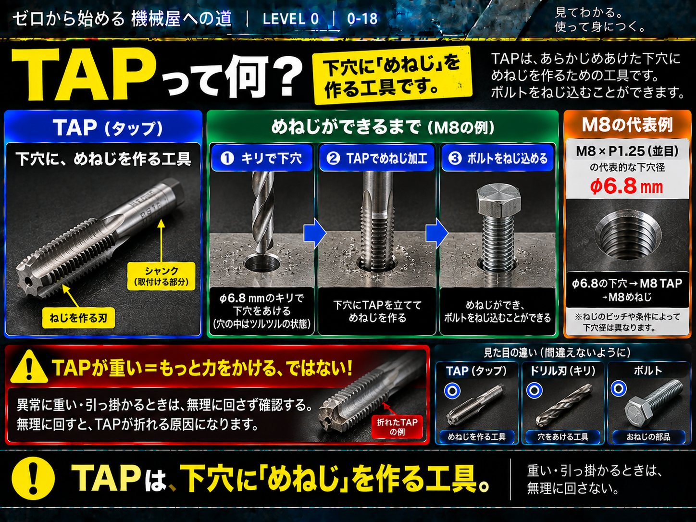
実物認識ビジュアル｜0-18
👀 TAPは何をする？
下穴の内側にめねじを作る工具・加工。
LEVEL 0-17で出てきた「キリ」とつながる。まず下穴をあけ、その後にTAPでねじ山を作る。
🏭 6.8のキリがここでつながる
代表例として、M8並目のTAP下穴にφ6.8mmを使う。
M8だから8mmの穴ではない。
ねじサイズ・ピッチ・規格によって下穴径は変わる。表や図面、社内標準を確認する。
🏭 代表的な並目TAPと下穴
| TAP | ピッチ | 代表的な下穴 |
|---|
| M5 | 0.8 | φ4.2 |
| M6 | 1.0 | φ5.0 |
| M8 | 1.25 | φ6.8 |
| M10 | 1.5 | φ8.5 |
| M12 | 1.75 | φ10.2 |
| M14 | 2.0 | φ12.0 |
| M16 | 2.0 | φ14.0 |
| M18 | 2.5 | φ15.5 |
| M20 | 2.5 | φ17.5 |
一般的なメートル並目ねじの代表値。細目ねじ・材質・加工条件などで変わるため、実作業では図面・TAP表・社内標準を優先する。
🧠 TAP加工で大事な感覚
「重い＝もっと力」ではない。
TAPは力で無理やりねじ込む工具ではない。まっすぐ入り、刃が正しく食い付いているかを感じながら進める。
特にボール盤での作業は、押し込み量を数字で丸暗記するより、先輩立会いで「自然に食い付く感覚」を覚える。
😱 新人あるある① 重いからもっと押す
TAPが入りにくい → もっと押す → もっと回す → TAP折損。
TAPが折れると、その後の除去がかなり面倒になる。
違和感があったら、止める。
😱 新人あるある② 何回もやり直す
「なんかねじが緩いな」→ もう一回TAP → またやる → またやる。
繰り返し通したり、斜めにさらったりすると、ねじ山が痩せてズルズルになることがある。
ねじ山は、やり直せば復活するわけではない。
✅ 作業前に確認すること
下穴径
指定サイズか
TAPサイズ
M・ピッチは合っているか
姿勢
斜めになっていないか
工具状態
欠け・摩耗・傷みはないか
⚠️ ボール盤でのTAP加工
ボール盤で行う場合は、材料・TAP径・機械・社内手順でやり方が変わる。
LEVEL 0では、回転数や押し付け力をWebで固定値として覚えない。
先輩立会いで、まっすぐ入ること・自然に食い付くこと・異常時に止めることを優先する。
🏭 うちでまず覚えること
切削油などの使用、ボール盤の操作、保持方法は会社のやり方に従う。
LEVEL 0のCLEARは「一人でTAP加工できる」ではなく、正しい準備と異常判断ができること。
🎮 クイズ
TAPは何を作る工具？
M8並目の代表的な下穴は？
TAPが急に重くなった。
ねじが緩いから何度もTAPを通す。
🔧 現場ミッション
👷 先輩チェック
正しい下穴・TAPを選び、斜めや異常な重さに気付き、無理せず止められたらCLEAR。
LESSON 0-19
🔩 ボルトを正しく入れる
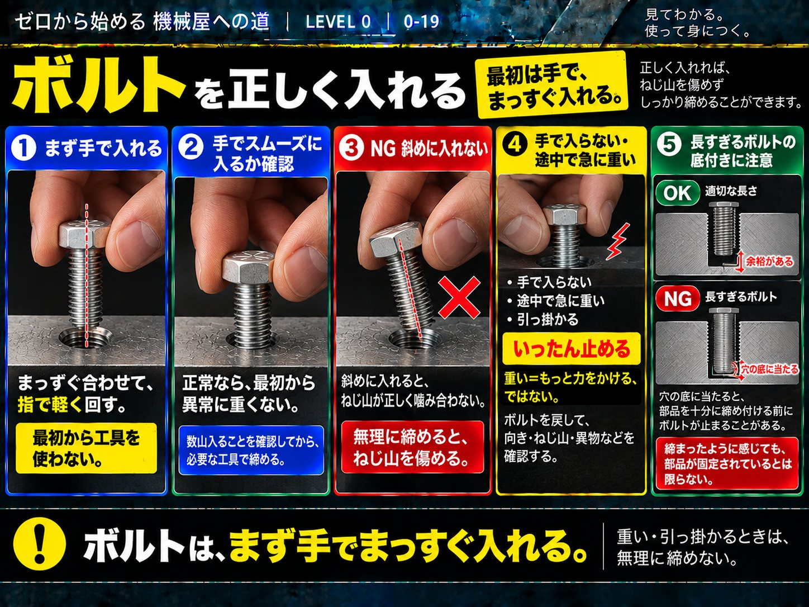
実物認識ビジュアル｜0-19
👀 「入った＝OK」ではない
ボルトはまず手で入るかを確認する。
最初から工具で回すと、斜めに入っていても気付きにくく、ねじ山を傷めることがある。
📖 基本の流れ
① 合ってる？
径・長さ・ねじ種類を確認
② 手で入れる
最初の数山を軽く回す
③ 違和感を見る
重い・斜め・引っ掛かり
④ 工具を使う
正しく入ってから締める
😱 新人あるある① 最初から工具
「入らへんな…」→ ラチェットや六角レンチでそのまま回す。
実は斜めに噛んでいて、ボルト側もTAP側もねじ山を傷める。
入らない時に力で解決しない。
😱 新人あるある② 斜めのまま締める
最初の掛かりが斜めでも、工具なら回ってしまうことがある。
途中で急に固くなったら、「締まってきた」ではなく「噛んでる」可能性も疑う。
🧠 TAP穴では底突きにも注意
ボルトが長すぎると、ねじ山がまだ残っていても穴の底へ先端が当たることがある。
固くなった ＝ 必ず締結完了
ではない。
0-06「M8×30って何？」の長さ確認がここにつながる。
✅ おかしい時に見るところ
サイズ
M径・ピッチは合ってる？
姿勢
斜めに入ってない？
ねじ山
潰れ・バリ・ゴミは？
長さ
TAP穴底に当たってない？
🏭 うちでまず覚えること
「最初は手」を基本にする。
手で数山入らない、途中で不自然に重い、斜めっぽい場合は、無理に工具を掛けず一度戻して確認する。
😱 ねじ山を壊すと後がしんどい
無理締めでTAP穴を傷めると、さらい直し・修正・サイズ変更・ヘリサート等、余計な手間が増えることがある。
LEVEL 0では修理方法より、壊す前に止まれることを優先する。
🎮 クイズ
ボルトをTAP穴へ入れる時、最初は？
途中で急に固くなった。
ボルトが長すぎるTAP穴では？
手で入らない。
🔧 現場ミッション
👷 先輩チェック
最初は手で入れ、斜め・異常な重さ・底突きに気付き、無理締めしなければCLEAR。
LESSON 0-20
🔩 TAP締めとナット締め
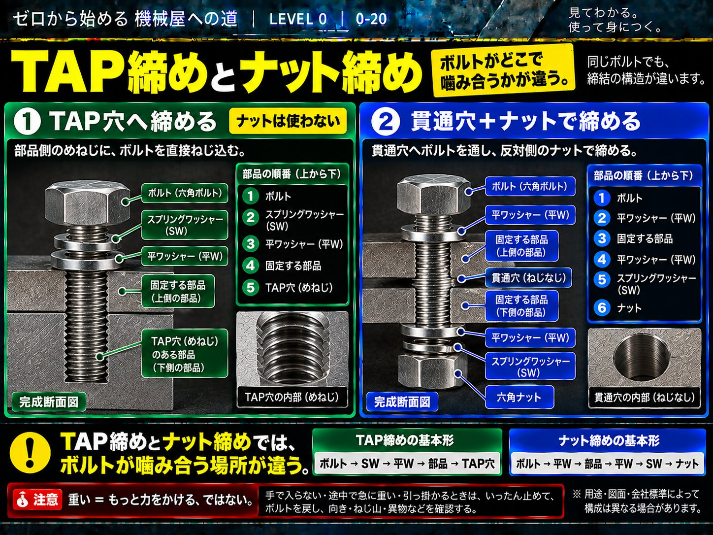
実物認識ビジュアル｜0-20
👀 同じボルトでも、締め方で並びが変わる
新人がよく混乱するのが、平ワッシャー（平W）とスプリングワッシャー（SW）の位置。
「SWはいつもボルト頭の下」ではない。
🏭 うちの基本：TAP締め
ボルト頭 → SW → 平W → 部品 → TAP穴
締め付ける側がボルト頭なので、うちでは基本的にSWをボルト頭側へ入れる。
🏭 うちの基本：ナット締め
ボルト頭 → 平W → 部品 → 平W → SW → ナット
うちでは基本的に、平Wを部品の両面に入れる。SWは締め付け側のナット側へ入れる。
😱 新人あるある
「ワッシャーは片側だけでええやろ」とか、ナット締めでもSWをボルト頭側へ入れる。
結果、うちの標準である平W両面＋SWはナット側から外れる。
覚えるのは場所じゃなく、どっち側で締めるか。
🧠 なんで平WとSWを入れる？
平W
座面を広げる・部品表面を守る・座りを安定させる
SW
うちでは緩み対策として基本使用
用途・設計・客先仕様によって使い方は変わる。「必ずこの並び」が万能ルールではない。
⚠️ 例外もある
カバー類などでは、トラスねじをワッシャー無しで使うこともある。
また、部品・客先仕様・図面指示でワッシャー構成が変わる場合がある。
現場標準より図面・仕様が優先される場面もある。
✅ 迷った時の見方
1
TAP締め？ ナット締め？
2
どちら側を工具で締める？
3
図面や仕様の指示はある？
4
会社標準と合ってる？
🎮 クイズ
うちの基本で、TAP締めの並びは？
うちの基本で、ナット締めの並びは？
SWは必ずボルト頭側？
図面にワッシャー構成の指定がある。
🔧 現場ミッション
👷 先輩チェック
TAP締め・ナット締めで平WとSWの位置を間違えず、図面・仕様の例外も確認できたらCLEAR。
LESSON 0-21
⚙️ グラインダーと危険工具
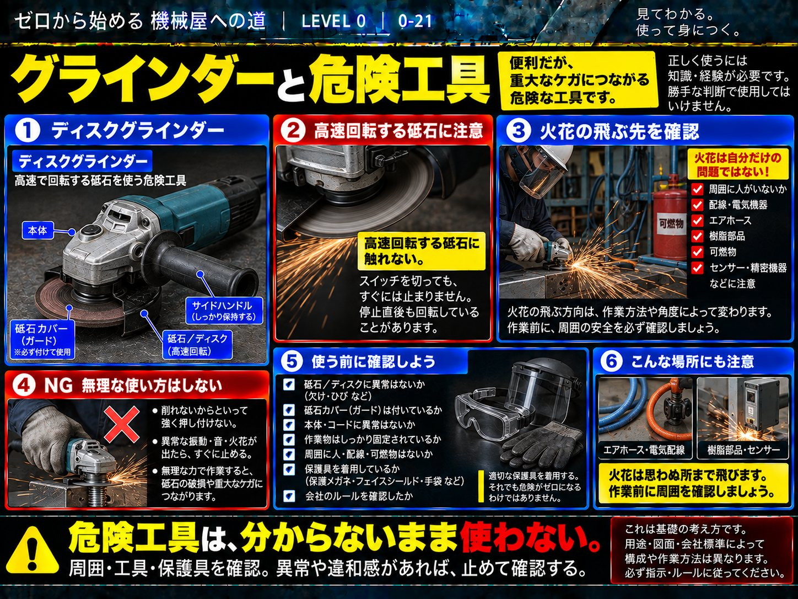
実物認識ビジュアル｜0-21
👀 「削るだけ」の工具ではない
ディスクグラインダー（現場で「サンダー」と呼ぶこともある）は、高速回転する砥石・ディスクを使う危険工具。
怖いのは刃だけじゃない。
火の粉、破片、巻き込み、対象物の動き、そして本体の跳ね上がりまで考える。
😱 一番怖い：サンダーの跳ね上げ
対象物への当て方や角度が悪い、ディスクが噛む、切断部が閉じるなどで、本体が急に跳ね返ることがある。
「押さえつければ勝てる」
ではない。
跳ねる方向に自分の顔や体を置かない。無理な姿勢で作業しない。
🔥 火の粉はどこへ飛ぶ？
研削方向とディスクの回転によって、火の粉は一定方向へ強く飛ぶ。
作業前に、火の粉の行き先を確認する。
人
顔・手・周囲作業者に向いてない？
物
ホース・配線・樹脂・塗装面に当たらない？
火災
ウエス・紙・溶剤など可燃物はない？
設備
センサー・エアチューブへ飛んでない？
😱 新人あるある：対象物の当て方
とりあえずディスクを強く押し付ける、角を深く噛ませる、無理な角度で当てる。
その結果、噛み込み・跳ね・ディスク破損につながることがある。
削れへん → もっと押す
に行かない。
✅ 作業前に見るところ
ディスク
用途・径・損傷・欠け
ガード
外してない・位置は適切
対象物
しっかり固定できてる
周囲
人・可燃物・配線・ホース
🧠 切断用と研削用は同じ扱いじゃない
ディスクには用途がある。切断用ディスクを横方向に強くこじるなど、用途外の力を掛けると破損リスクが高まる。
使用するディスクの表示・取扱説明・会社標準を確認する。
⚠️ 保護具と作業姿勢
会社指定の保護メガネ・フェイスシールド等を使用し、飛散方向へ顔や体を置かない。
回転が完全に止まるまで、不用意に置かない・触らない。
🏭 LEVEL 0での位置づけ
このLessonを見ただけで使用OKにはしない。
LEVEL 0では「何が危険か」「どこを見るか」「おかしい時に止まる」を理解する。
実際の使用は、会社の教育・社内ルール・必要な保護具・先輩指導に従う。資格や特別教育の要否は、作業内容と会社ルールを確認する。
🎮 クイズ
削れにくい時は？
火の粉の方向は？
本体が跳ねる可能性がある時、自分の体は？
切断用ディスクを横にこじって使う？
🔧 現場ミッション
👷 先輩チェック
火の粉・跳ね返り・対象物の固定・ディスク用途を確認し、危険な当て方を避ける判断ができたらCLEAR。
LESSON 0-22
🛠️ ポンチ・ヤスリ・スクレーパー
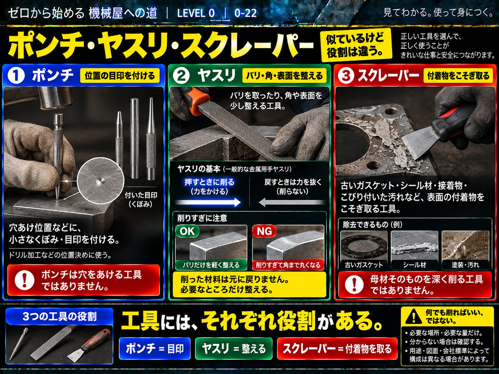
実物認識ビジュアル｜0-22
👀 地味やけど、仕上がりを左右する3つ
ポンチ
穴あけ位置などに小さな打痕を付ける
ヤスリ
バリ取り・角落とし・微調整
スクレーパー
固着物・ガスケット跡などを削ぎ落とす
📖 ヤスリは「往復全力」じゃない
一般的な金属用手ヤスリは、押す時に切れるものが多い。
押す時に削る。戻す時は力を抜く。
戻し側まで全力で押さえ付けると、動きがぎこちなくなり、狙った面を崩しやすい。
😱 うちであるある：どっちにも全力
押す時も、引く時も、ずっと全力。
その結果、必要以上に削ってしまったり、手元が暴れて角が丸くなる。
バリを取るつもりが、形まで変える。
🧠 ヤスリは「削る量」を考える
バリ取りなら、目的は引っ掛かりをなくすこと。角そのものを消すことではない。
面を出したい時と、角を軽く落としたい時では、当て方も削る量も違う。
✅ ヤスリで見るところ
当て方
面に対して斜めになってない？
力
押し側に適度な力、戻しは軽く
削る量
やりすぎて形を変えてない？
仕上がり
バリだけ取れている？
📍 ポンチは何のため？
穴あけ位置などに目印となる小さな打痕を付け、ドリル先端が逃げにくくするために使う。
位置がズレたまま深く打つと、その後の穴位置もズレる。まず狙いを確認する。
⚠️ スクレーパーは母材まで削らない
固着物を取りたいからといって、刃を強く立ててガリガリやると、母材の表面まで傷付けることがある。
特にシール面・合わせ面は、傷が漏れや密着不良につながることもある。
🏭 うちでまず覚えること
「取るもの」と「残すもの」を意識する。
ヤスリならバリを取る。スクレーパーなら付着物を取る。母材や必要な角まで削らない。
🎮 クイズ
一般的な金属用手ヤスリで削る時は？
バリ取りで角が丸くなってきた。
ポンチの目的は？
スクレーパーで固着物を取る時は？
🔧 現場ミッション
👷 先輩チェック
ヤスリを往復全力で使わず、削る量を見ながらバリ取りでき、ポンチ・スクレーパーも目的に応じて使い分けられたらCLEAR。
LESSON 0-23
😱 工具の扱い総集編
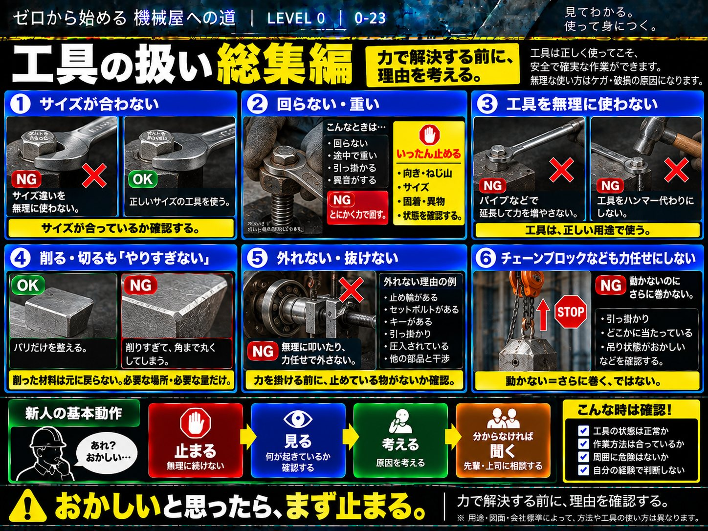
実物認識ビジュアル｜0-23
👀 工具は「知ってる」だけでは足りない
ここまでの工具Lessonで出てきた失敗をまとめて確認する。
目的は失敗する前に違和感へ気付くこと。
😱 あるある① サイズ・工具選び
- M8だから8mmのスパナを持ってくる
- 合わない六角レンチを浅く掛ける
- ドライバーの番手違いでねじ頭をなめる
- ニッパーで何でも切ろうとする
😱 あるある② 力で解決する
- 手で入らないボルトを工具でねじ込む
- TAPが重いのにさらに力を掛ける
- サンダーが削れへんから強く押し付ける
- 鉄ハンマーでシャフト端面を殴る
「重い・入らない・動かない」＝もっと力
ではない。
😱 あるある③ 工具そのものを壊す
- ボールポイント六角で本締めして先端を折る
- モンキーをガバガバで掛けて口を傷める
- メジャーを踏んでねじる
- ヤスリを往復どっちも全力で使う
😱 あるある④ 狭い所でメガネが抜けへん
狭い場所でメガネレンチを使い、締め終わったら周囲に当たって工具を外す逃げがない。
掛ける前に、最後に抜けるかまで考える。
振り角だけでなく、締め終わった後の工具の抜き方向も確認する。
😱 あるある⑤ チェーンブロックをイキって早巻き
勢いよく巻いて、止めるタイミングを逃し、部品や吊り具を食い込ませて動かなくする。
速さより、位置と荷重の変化を見る。
寄せ作業や芯合わせは、終盤ほどゆっくり。重い・動きが変・当たりがおかしい時は止めて確認する。
😱 あるある⑥ 測る・切る・削るをやりすぎる
- ノギスをクランプみたいに強く挟む
- エアチューブを斜めに切る
- ヤスリでバリを取りすぎて角を丸くする
- スクレーパーで母材まで傷付ける
🏭 うちで覚えてほしいクセ
止まる
違和感があったら一回止める
見る
工具・対象物・周囲を見る
考える
力を掛けたら何が起きるか考える
聞く
分からなければ先輩に確認
🎮 クイズ
狭い場所でメガネレンチを使う時は？
工具が途中で急に重くなった。
チェーンブロックで位置を合わせる終盤は？
ヤスリでバリが取れたのに角まで丸くなってきた。
🔧 現場ミッション
👷 先輩チェック
工具のサイズ・当て方・力加減・逃げを考え、違和感がある時に止まって確認できたらCLEAR。
LESSON 0-24
🏃 現場での動き方・新人あるある
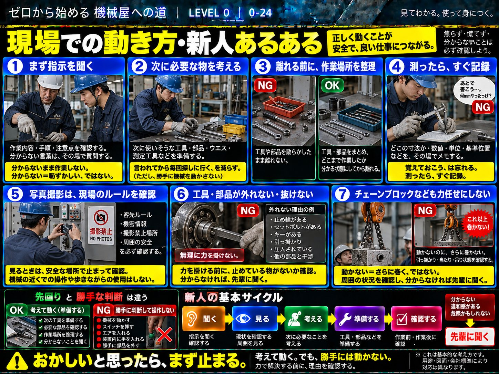
実物認識ビジュアル｜0-24
👀 作業ができるだけで「仕事ができる」ではない
現場では、先輩の指示を待つだけじゃなく、次の作業・忘れ物・記録・片付けまで考えて動けると強い。
ちょっと先を読める新人は、「やるやないか！」と思われる。
🏭 先輩の一歩先をアシスト
作業の流れを見て、次に使いそうな工具や部品を考える。
ただし、先読み＝勝手に作業することではない。必要そうな物を準備し、迷う時は確認する。
😱 あるある① 手伝いに行って、自分が何してたか忘れる
自分の作業中に別の作業を手伝い、戻ってきたら「俺、何しようとしてたっけ？」。
作業を離れる時は、どこまで終わったか・次に何をするかを一度整理する。
中途半端な締結や危険な状態のまま放置しない。必要なら先輩へ状況を伝える。
😱 あるある② 現場に着いてから忘れ物
現場へ着いて工具箱を開けてから、「あれ持ってきてない…」。
出発前に、図面・工具・測定具・部品・消耗品などを作業内容に合わせて確認する。
現場の段取りは、会社を出る前から始まってる。
😱 あるある③ 採寸したのにメモしてない
現場でちゃんと測ったのに、その場で記録せず、後から「あれ何mmやった？」。
測ったらすぐ、どこの寸法か分かる形でメモする。単位・向き・基準位置も分かるように残す。
許可されているなら、メモと写真を組み合わせると後で確認しやすい。
📷 現場写真は勝手に撮らない
客先・工場・設備には、撮影禁止や情報管理のルールがある。
撮る前に現場の人へ許可を取る。
撮影OKでも、撮影禁止エリア・他社情報・人・掲示物などが写り込まないか確認する。
現場・客先のルールが最優先。
😱 あるある④ 工具を置いた場所を忘れる
機械の上、床、フレームの中……使った場所に置いたまま次へ行く。
そのうち「13どこいった？」「六角ない！」となり、工具箱から工具が消えていく。
出した工具は、戻すまでが作業。
😱 あるある⑤ 帰ろうとしたら工具箱が閉まらん
使った物を適当に放り込み続けて、撤収時に工具箱がぐちゃぐちゃ。
蓋が閉まらん・工具が足りん・忘れ物探しで最後に時間を食う。
使い終わった時点で戻し、撤収前に工具数と置き忘れを確認する。
🧠 現場で覚えてほしい5つ
先読み
次に必要な物を考える
復帰
離れる前に次の作業を整理
準備
出発前に忘れ物チェック
記録
採寸したらすぐ残す
片付け
工具を定位置へ戻す
🎮 クイズ
先輩が次に使いそうな工具が分かった。
自分の作業を中断して手伝いに行く時は？
現場で採寸した。
客先設備を写真に撮りたい。
現場作業が終わった。
🔧 現場ミッション
👷 先輩チェック
先読み・作業復帰・忘れ物防止・採寸記録・撮影確認・工具管理まで、先輩の作業を止めない動きができたらCLEAR。
LESSON 0-25
🗣️ 現場語を聞き取れ！
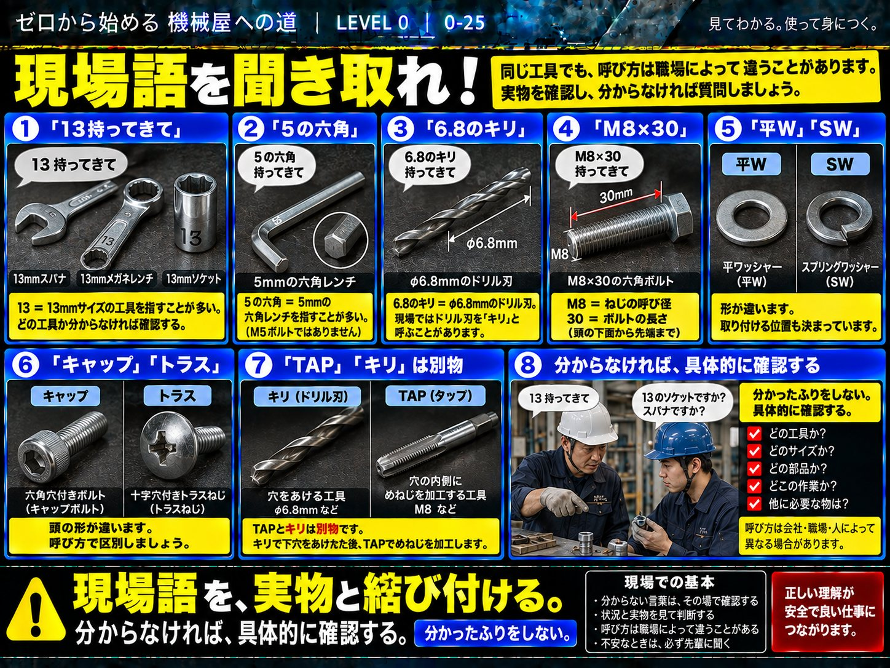
実物認識ビジュアル｜0-25
👀 現場では、文章より短い言葉で飛んでくる
先輩は忙しい。指示は長い説明じゃなく、短い現場語で飛んでくる。
「13」「5の六角」「6.8のキリ」
意味が分かれば動ける。
📖 まずは定番を聞き取る
「13持ってきて」
工具の文脈なら13mmのスパナ・メガネ・ソケットなど
「5の六角」
5mmの六角レンチ
「6.8のキリ」
φ6.8mmのドリル刃
「M8×30」
M8・長さ30mmのボルト
🧠 数字だけ聞いて決めつけない
「13」は、スパナかもしれんし、キリかもしれん。
大事なのは前後の会話と作業内容を見ること。
数字だけじゃなく、文脈を読む。
🏭 うちで出やすい言葉
- 平W ＝ 平ワッシャー
- SW ＝ スプリングワッシャー
- キャップ ＝ 六角穴付きボルト
- トラス ＝ トラスねじ
- TAP ＝ めねじ加工／TAP穴
- キリ ＝ ドリル刃
- メジャー ＝ コンベックス
👂 指示文で考える
「M8×30、平WとSW付けて」
サイズだけでなくワッシャー構成まで考える
「6.8で下穴あけてTAP」
キリ → 下穴 → TAP加工の流れ
「下流側のセンサー見て」
機械の流れ方向を見て位置を判断
「メジャー取って」
うちではコンベックスを指すことが多い
😱 新人あるある：分からんのに分かったフリ
聞き返すのが恥ずかしくて、適当に工具を持って行く。
結果、往復が増えて先輩の手も止まる。
分からん時は、確認した方が早い。
✅ 聞き返す時も具体的に
ただ「分かりません」じゃなく、どこが分からんかを伝える。
例1
「13ってソケットですか、メガネですか？」
例2
「下流ってこの流れ方向で合ってますか？」
例3
「M8の並目で合ってますか？」
例4
「このTAP穴のことですか？」
🎮 クイズ
「6.8のキリ取って」と言われた。
「M8×30」の30は？
「13」とだけ言われて、文脈が分からない。
「下流側のセンサー見て」と言われた。
指示が聞き取れなかった。
🔧 現場ミッション
👷 先輩チェック
短い現場指示を聞いて、意味を理解して正しい工具・部品・場所へ動け、分からない時は確認できたらCLEAR。
LEVEL 0 FINAL🎓 LEVEL 0 実技試験
Webクイズではなく、実物・実機で「できる」を確認する最終試験。
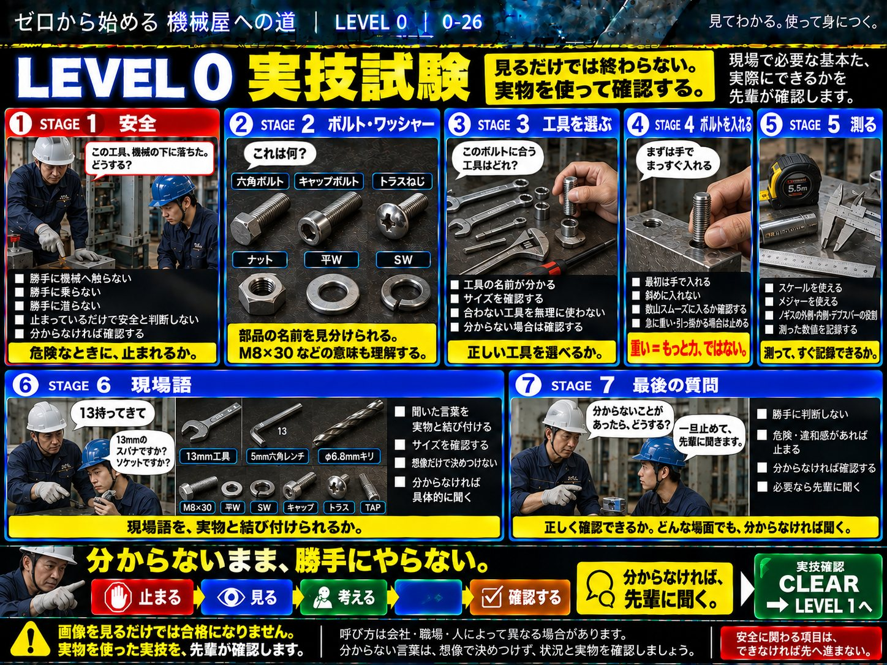
実物認識ビジュアル｜0-26
⚠️ 合格条件は「知ってる」ではなく「安全にできる」
LEVEL 0のゴールは、一人前の機械屋になることではない。
安全に止まれる。
基本工具を選べる。
指示が分かる。
分からない時に勝手にやらない。
危険な判断をした場合は、他ができてもその場で指導して再試験。
🏭 試験のやり方
先輩が実物を使って指示を出し、新人が自分で選ぶ・測る・組む・説明する。
答えを先に教えない。詰まった時に「分かりません、確認します」と言えることも評価する。
危険工具の実操作は、会社の教育・社内ルール・必要な保護具・先輩指導の範囲でのみ実施する。
🚨 CRITICAL：これをやったら一旦STOP
- 電源・エア・残留エネルギーを確認せず、装置内へ手を入れる／潜る
- ローラーコンベア等へ勝手に乗る
- 危険工具を指示なしで使い始める
- 重い・入らない・分からないのに、力で進める
- 不明点を確認せず「たぶん」で作業を続ける
LEVEL 0で一番見たいのは、危ない時に止まれるか。
STAGE 2｜🗣️ 現場語と工具選び
先輩がランダムに指示：
「13持ってきて」
「5の六角」
「M8×30」
「6.8のキリ」
さらに、六角ボルト・キャップ・トラス、平W・SW、ペンチ・ニッパー・プライヤー・ラジペン等を現物で識別する。
「13」だけで文脈が足りない場合は、何の13か聞き返せればOK。
🎯 最後の一問
先輩：「やったことない作業やけど、たぶん分かるやろ。やっといて」
新人が言うべきことは？
期待する答え：分からない点・危険箇所・手順を確認してから作業する。
「はい！」だけで勝手に始めるより、確認して安全に進める方を評価する。
📋 合格判定
STAGE 1〜7をすべて先輩が実物・実機で確認する。
全STAGE PASS ＋ 0-01〜0-25 CLEARで、LEVEL 0 CLEAR。
一回で全部できなくてもOK。できなかった項目を復習して再試験する。
🎓 LEVEL 0 CLEAR！
「何を言ってるか全然分からん新人」から
現場で基本の話が通じる新人へ。
次はLEVEL 1。シャフト・ベアリング・モーター・シリンダー・センサーなど、機械についている物を覚えていく。